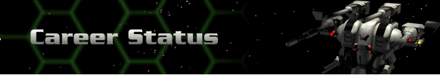

› |
› |
› |
Career Status |

This record of your achievements in rank is continually updated to reflect your progress. Be aware that this information is also monitored by the Corporation. Among other things, it shows you the number of Hercs and Bioderms you currently control, as well as the maximum number you are allowed to control. If you are not maximizing your command, and you have the credits to do so, then this information tells you where you may be shorting yourself.
Your rank is also shown here. This ranking is the sign of your success in the Cyberstorm universe. You begin with the “pre-rank” of Ensign. If you successfully progress through missions, you are rewarded with promotions. Each promotion carries with it a title advancement. You also add to your Herc fleet and Unique Bioderms are placed under your command. At the sixth level, you will rescue a Unique Bioderm who will also join your forces.
If you’re good enough to advance, you will have access to new weapons and device enhancements. See Weapons or Devices for a list categorized by Tech Level.
| Commander Rank | Number of Bioderms | Number of Hercs | Herc Types Available | ||
|---|---|---|---|---|---|
| FIRST SYSTEM | |||||
| 1 | Unit Leader | 4 | 4 | Shadow, Remora, Sensei Ogre, Giant |
Tech Level 1 |
| 2 | Unit Captain | 6 | 6 | Tech Level 2; Bioderm: Tarsus |
|
| 3 | Squad Leader | 9 | 8 | Demon | Tech Level 3; Bioderm: Qabal |
| 4 | Squad Captain | 12 | 10 | Tech Level 4; Bioderm: Boto |
|
| 5 | Squad Commander | 14 | 12 | Tech Level 5; Bioderm: Vryl |
|
| Destroy base as elite mission to progress to sixth rank. Rescue 1 Bioderm (Jai). | |||||
| Commander Rank | Number of Bioderms | Number of Hercs | Herc Types Available | ||
| SECOND SYSTEM | |||||
| 6 | Force Leader | 17 | 15 | Reaper | Tech Level 6; Bioderm: Jai |
| 7 | Force Captain | 20 | 17 | Tech Level 7; Bioderm: Ma-Yuan |
|
| 8 | Combat Leader | 23 | 19 | Tech Level 8; Bioderm: Tarn |
|
| 9 | Combat Captain | 26 | 21 | Juggernaut | Tech Level 9; Bioderm: Mentor |
| 10 | Combat Commander | 30 | 23 | Tech Level 10; Bioderm: Kaesar |
|
| 11 | Battle Leader | 34 | 26 | Tech Level 11; Bioderm: Maia |
|
| 12 | Battle Captain | 37 | 27 | Tech Level 12 | |
| Destroy base as elite mission to progress to thirteenth rank. | |||||
| Commander Rank | Number of Bioderms | Number of Hercs | Herc Types Available | ||
| THIRD SYSTEM | |||||
| 13 | Herc Commander | 40 | 28 | Tech Level 13 | |
| Destroy largest base to win the game. | |||||